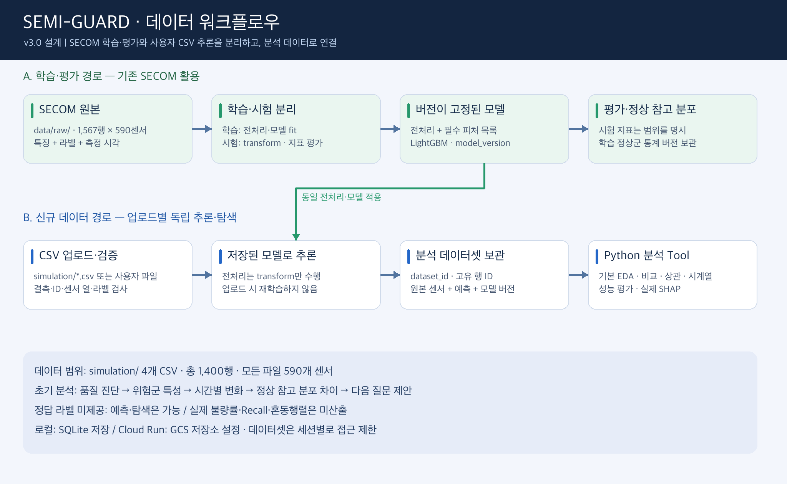
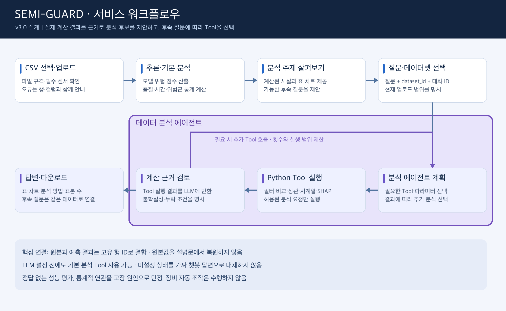

기준일: 2026-10-20 · 수행: 박주형 · 상태: 구현 및 로컬 검증 완료 · Gemini 3.8 Flash 실제 질의 검증 완료 · GCS 연결은 별도 검증
1. 목적과 범위
SECOM 원본은 모델 학습·시험 평가에 사용한다. 사용자가 업로드한 CSV는 저장된 전처리·모델로 추론한다. 원본 센서와 예측 결과를 고유 행 ID로 결합해 데이터셋별로 보관하고, 탐색적 분석 에이전트가 Python Tool을 선택·실행하여 질문에 답한다. LLM Wiki, 문서 키워드 답변, 설명문 기반 수치 생성, 벡터 RAG는 서비스 실행 경로에서 제거한다.
업로드는 학습 데이터 자동 추가나 재학습을 의미하지 않는다. 기존 SECOM 학습·평가 노트북과 모델을 유지하되, 시험 데이터를 이용한 모델 선정 문제는 별도 재평가 과제로 기록한다. 시뮬레이션은 합성 검증 데이터이며 실제 설비 이력으로 소개하지 않는다. 물리 센서 의미·고장 원인·정비 조치는 검증된 메타데이터 없이 단정하지 않는다.
2. 데이터 워크플로우

데이터 워크플로우 · 클릭하면 원본 이미지학습과 추론은 저장된 전처리 계약을 공유한다. 학습에서만 fit하고 신규 데이터는 transform만 수행한다. 데이터 추가로 기존 모델을 덮어쓰지 않는다. 기본 590개 센서 템플릿을 제공하며 실제 추론에는 모델의 valid_features 열을 모두 요구한다. 행 내부 결측은 허용·집계하고 학습 중앙값으로 대체한다. 누락 열, 비수치, 무한대, 중복 표본 ID는 명확한 검증 오류로 처리한다. 측정 시각은 추론의 필수 특성이 아니며 없을 때 시계열 분석만 사용할 수 없다. actual_label은 선택값이며 0/1만 허용한다. 원본 SECOM의 -1/1 변환은 초기 데이터 로더에서만 수행한다.
3. 서비스 워크플로우

서비스 워크플로우 · 클릭하면 원본 이미지보라색 테두리의 데이터 분석 에이전트 영역은 LLM 분석 계획, Python Tool 실행, 계산 근거 검토와 추가 Tool 호출 루프를 포함한다. CSV 업로드·기본 분석·분석 주제 표시·질문 입력·최종 결과 표시와 다운로드는 서비스 UI 및 데이터 처리 계층으로 구분한다.
CSV 업로드 → 검증 → 모델 추론 → 원본·예측 저장 → 기본 EDA와 질문 후보 → 질문과 dataset_id 전달 → LLM 계획 → Python Tool 계산 → 추가 분석 또는 답변. 서버가 발급한 세션으로 데이터셋을 격리하고 대화도 해당 데이터셋에 고정한다. 기본 통계는 API 키 없이 계산되며 자연어 에이전트는 Gemini 3.8 Flash(gemini-3.8-flash)를 사용하며, GEMINI_API_KEY 또는 GOOGLE_API_KEY 설정 후 작동한다. GEMINI_MODEL로 모델 ID를 명시할 수 있다. 설정이 없거나 추론이 실패하면 명시적 상태·오류를 반환하며 준비된 데모 예측으로 대체하지 않는다.
4. simulation CSV 실측 현황
다음 수치는 파일을 직접 읽어 집계했다. 기존 문서의 ‘매월 100건’ 가정을 사용하지 않는다.
| 파일 | 행 수 | 라벨 1 | 불량률 | 결측 센서 셀 |
|---|
secom_test_batch_200811_200903.csv | 500 | 31 | 6.20% | 13,253 |
sim_batch_200_200904_200905.csv | 200 | 9 | 4.50% | 5,280 |
sim_batch_300_200906_200908.csv | 300 | 22 | 7.33% | 8,064 |
sim_batch_400_200909_200912.csv | 400 | 12 | 3.00% | 10,367 |
총 1,400행·590개 센서, 파일 내부 sample_id 중복 0건. 여름 배치의 월별 건수는 98/101/101이고 2009-08 라벨 불량률은 14/101=13.86%다. 가을 배치는 98/102/99/101건이다. 시간별 수율과 원인·회복 가설은 구분한다. 상세 집계는 simulation_inventory.json에 보관한다.
5. 기본 분석 Tool과 선택 근거
| Tool | 분석 내용·선택 이유 | 데이터 조건 |
|---|
| profile_dataset | 행·센서 수, 결측률, 상수열, 라벨·예측 분포: 모든 CSV의 첫 진단 | 센서값 |
| rank_samples | 위험 점수 상위/하위 표본과 센서값 조회 | 예측 결과 |
| query_data | 컬럼 선택·조건 필터·정렬·그룹 집계: 미리 정하지 않은 질문에 조합 가능 | 허용된 컬럼·연산 |
| compare_groups | 고위험 20%와 나머지의 센서 평균·표준화 차이 | 같은 모델의 예측 |
| correlate | 센서-위험 점수 또는 센서 간 상관과 유효 표본 수 | 숫자·최소 표본 수 |
| time_summary | 실제 월/일/주별 표본 수·위험 점수·확인된 라벨 불량률 | 측정 시각 |
| compare_reference | 고정된 SECOM 학습 정상군 대비 평균 이동·기준 표준편차 차이 | 버전 고정 참고 분포 |
| evaluate_predictions | 상위 검토 비율별 TP/FP/FN/TN·Recall·Precision·Lift | 전체 평가 표본 정답 필요 |
| explain_sample | 실제 TreeExplainer로 해당 표본의 기여도·기저값·모델 점수 제공 | 모델·전처리·SHAP |
기본 리포트는 품질 진단, 월별 변화, 위험군 차이, 위험 점수 관련 센서, 정상 참고 비교, 조건이 맞는 성능 평가를 계산한다. 에이전트가 결과를 보며 도구를 반복 선택할 수 있다. 1차 구현은 임의 Python 코드 실행 대신 등록 Tool의 구조화된 인자를 사용하고, 일반 질의·집계 Tool로 범위를 확장한다. 호출 횟수·반환 행·컬럼을 제한하며 Tool 실패를 계산된 사실처럼 설명하지 않는다. SHAP 누락 시 가짜 기여도를 생성하지 않는다.
6. 데이터 계약·저장·추적성
dataset_id: 서버 생성 UUID. 원본 행별 내부 row_id를 발급하고 sample_id는 원천 식별자로 보관한다.
metadata: 파일명·해시, 소유 세션, 등록·측정 시각, source_type, model_version, schema_version, 표본 수와 결측 요약.
원본 센서값과 모델 입력 대체값을 구분한다. 순위는 데이터셋·조건·검토 비율별로 계산한다.
로컬 SQLite는 프로세스 재시작 후 데이터셋·대화를 보존한다. Cloud Run에서는 DATASET_STORAGE=gcs와 DATASET_BUCKET을 명시한다. 임시 로컬 디스크를 영속 저장으로 소개하지 않는다.
LLM에는 질문과 필요한 계산 요약을 전송한다. 원본 전체 CSV를 매번 프롬프트에 삽입하지 않는다. 외부 LLM 사용 사실을 화면에 알린다.
7. API·화면 변경
POST /api/predict-batch: 파일 검증·공통 추론·dataset_id와 결과 반환. 이전 results/full_results 응답 호환.
GET /api/datasets 및 /api/datasets/{id}: 접근 가능한 데이터셋 목록·요약·원본/예측 결합 조회.
POST /api/datasets/{id}/tools/{tool_name}: 분석 Tool 직접 실행.
GET /api/datasets/{id}/report: 기본 EDA·분석 후보와 근거 반환.
POST /api/chat: query, dataset_id, conversation_id를 받아 실제 Tool 호출 루프 실행.
GET /api/simulation: 프로젝트 simulation/의 허용된 CSV 목록. 선택 파일을 동일 업로드 경로로 처리.
웹 분석실: CSV 업로드/시뮬레이션 선택, 현재 데이터셋, 기본 분석, Tool 실행 결과와 차트, 질문·후속 대화, 원본·예측/리포트 다운로드.
8. Wiki 제거와 기존 기능 유지
활성 API의 wiki/list·add·tree·doc 및 키워드 챗봇, Wiki→드리프트·점검 연결을 제거한다. Wiki 문서와 전용 동기화 스크립트는 실행 경로에서 제거하고 전환 전 사본을 별도 보관한다. AGENTS.md의 Wiki-First 규약은 본 설계와 일치하게 갱신한다. Dockerfile의 Wiki COPY도 제거한다. 기존 학습·평가 기능은 유지하며 정적 데이터 기반 대시보드는 과거 평가/데모 범위로 표시하고 새 업로드 분석실과 구분한다. 기존 위키와 합성 데이터의 물리 원인 문구를 새 분석 근거로 사용하지 않는다.
9. 구현 순서와 검증 기준
1. 본 기획안과 PNG 데이터·서비스 워크플로우를 먼저 갱신한다.
2. simulation 파일 기반 기본 분석 모듈·공통 추론·저장소를 구현한다.
3. 자연어 에이전트의 Tool 스키마·실행 루프·API를 연결한다.
4. Wiki UI를 분석실로 교체하고 기존 CSV 업로드도 같은 데이터셋 경로로 연결한다.
5. 4개 CSV 전수 집계·추론, 행 ID 결합, 재시작 보존, 세션 격리, 미라벨·결측·오류 처리, Tool 호출 루프, 웹 화면을 검증한다.
10. 완료 기준·제약
파일 통계와 Tool 계산이 일치하고, 사용자가 선택한 파일의 전체 행을 질의할 수 있어야 한다. 정답 미제공 시 실제 불량 지표는 null/미확인으로 제공한다. 모델·전처리/필수 피처가 없으면 추론 실패를 반환한다. 외부 LLM 라이브 호출은 유효한 서버 환경 설정이 있어야 검증할 수 있으며, 모의 Tool 호출 검증과 구분해 기록한다. 기획안의 ‘설계’와 검증 후 ‘구현’ 상태를 구분한다. 현재 작업에는 라이브 Cloud Run 배포와 자동 모델 재학습·장비 인터락 실행이 포함되지 않는다.
11. 구현·검증 결과
실제 저장 모델(버전 777d4a5683437110b7ec)로 simulation 4개 파일 1,400행의 전수 추론과 기본 분석을 완료했다. 입력·행 결합·저장·접근 범위·미라벨·실제 SHAP 가산성·API·모의 LLM Tool 루프에 대한 자동 검증을 통과했다. 웹에서 simulation 선택 후 300행과 590센서, 조건 집계, 전체 결과 페이지 이동을 확인했다. Gemini 3.8 Flash 실제 API로 월별 분석과 후속 성능 평가의 Tool 호출·답변을 확인했다. 자동 검증 35개가 통과했다. 2009-08 불량률 14/101=13.86%, 상위 20% 검토 TP=5·FN=17·Recall=22.73%를 실제 질의로 확인했고 docs/demo/에 화면과 기록을 보관했다. GCS 영속 저장은 자격 증명이 있는 환경에서 추가 검증해야 한다.
| 파일 | 표본 | 상위 20% 검토 Recall |
|---|
| 2008-11~2009-03 | 500 | 35.48% |
| 2009-04~05 | 200 | 22.22% |
| 2009-06~08 | 300 | 22.73% |
| 2009-09~12 | 400 | 16.67% |
합성 데이터에서 계산한 파일별 평가이며 기존 SECOM 시험셋 성능·실제 설비 성능과 구분한다. 코드·실행법은 기존코드/README.md, 재현 실행은 tools/analyze_simulation.py, 분석 근거는 artifacts/analysis_reports/에 보관했다.
12. 참고
Gemini Function Calling: https://ai.google.dev/gemini-api/docs/function-calling
Cloud Run 파일 시스템 계약: https://docs.cloud.google.com/run/docs/container-contract